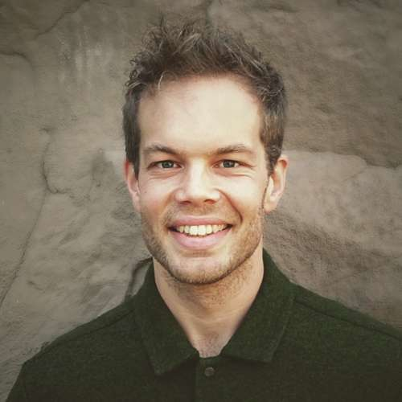
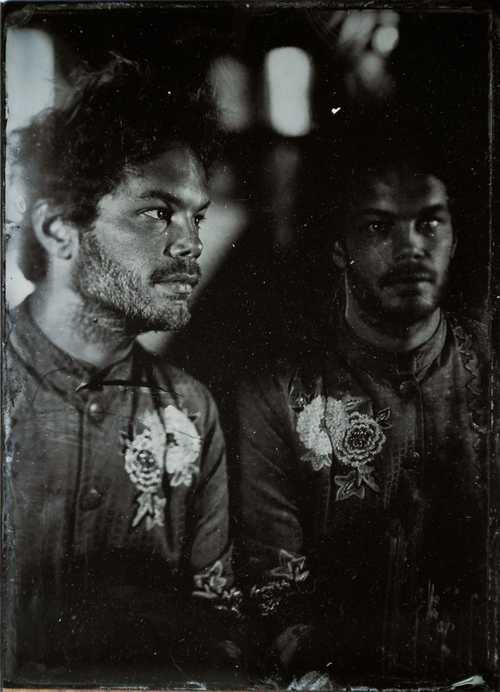

About
Pim Schachtschabel
Architect of Curiosity

Hi. Thanks for wanting to know more.
The short version: I design the conditions where curiosity comes alive. For twelve years I did that in physical space. Now I do it on stages and with teams as well.
I trained as an architect at Delft University of Technology, where I learned that the shape of a room decides what happens inside it. I have been designing rooms ever since, though most of them have not been buildings.
In 2014 I co-founded Sherlocked, which became the #1 escape room in Amsterdam and one of the most acclaimed in Europe. I designed Wild Dining, which moved the dinner ritual to places it did not belong, including the toilets of a moving train. I co-created Stone Soup, an international community of makers prototyping experiences together. I designed an experience for the King of the Netherlands. Today I am Design Director at Tellart, where I most recently directed the guest experience for the Netherlands Pavilion and the Philippine Pavilion at World Expo 2025 in Osaka. Along the way: Google, Heinz, ABN-AMRO, Rijksmuseum, JDE, Adyen, The Social Hub.
Then, in April 2020, locked down in San Francisco, I started a conversation with Anthony Rocco that became the most important project of my life.
Together with Monica Canfield-Lenfest we held more than 75 designed conversations, which we called Interview Rituals, with people across cultures and disciplines. We wanted to know whether curiosity could be built at the scale of a life the way we built it at the scale of a room. It can. The six practices that came out of those conversations became our book, Architecting Curiosity, and the foundation of everything I now teach and speak about.
I live in Amsterdam. I play the cello, climb rocks outdoors, and meditate most mornings. I believe a flower doesn't have to try to be a flower. It just is. The same is true of your curiosity.
Okay, your turn. Tell me what you're working on.
The longer version
I design experiences that make people curious, and then I got curious about curiosity itself. That's probably the simplest way to tell this story. The longer version goes something like this:
I trained as an architect at Delft University of Technology, where I learned that the shape of a room determines what happens inside it. The height of a ceiling changes whether you feel expansive or intimate. The placement of a door determines where your eye goes first. The quality of light decides whether you linger or rush through. I became fascinated not just by how spaces look, but by how they feel, and what you could make people feel if you designed with enough care.
That fascination led me in directions no one predicted. In 2014, I co-founded Sherlocked, what became the #1 escape room in Amsterdam and one of the most acclaimed in Europe. We designed experiences where strangers walked into a room as individuals and walked out as collaborators, having solved mysteries together that they couldn't have solved alone. I learned more about human curiosity in those rooms than in any classroom: how people open up when they feel safe, how a well-placed question can change the energy of a group, how the moment of almost knowing is more powerful than the answer itself.
From there, the work kept expanding. I designed Wild Dining, an experience that reimagined the dinner ritual in unexpected locations, including the toilets of a moving train. I co-created Stone Soup, an international community bringing creators together to prototype experiences. I designed a royal experience for the Dutch King. And I joined Tellart as Design Director, where I now lead holistic experience design for major cultural and brand projects, most recently directing the guest experience for both the Netherlands Pavilion and the Philippine Pavilion at World Expo 2025 in Osaka.
Along the way, the client list grew: Google, Heinz, ABN-AMRO, Rijksmuseum, JDE, Adyen, The Social Hub. Each project taught me something about the mechanics of wonder: what makes people lean in, what makes them forget they're being designed for, what makes an experience stay in someone's body long after they've left the room.
And then the pandemic happened.
In April 2020, locked down in San Francisco, I started a conversation with my collaborator Anthony Rocco that became the most important project of my life. We asked a simple question: can curiosity be designed, not just in a room, but in a life?
Over the next year, together with Monica Canfield-Lenfest, we held more than 75 carefully designed conversations, which we called Interview Rituals, with people across cultures, backgrounds, and disciplines. These weren't standard interviews. They were experiences: each guest brought a meaningful song, we listened together, and then we explored four curated questions about how curiosity shows up in their lives. What we found changed everything.
The most alive, creative, and present people we spoke with didn't have more answers. They had a different quality of attention. They had learned to observe without grasping, to open without losing themselves, to practice without performing, and to hold their lives with beauty and ease.
From those conversations, six practices emerged — Observing, Suspending, Apprenticing, Ritualizing, Gracing, Flowing — that form the framework of our upcoming book, Architecting Curiosity, and the foundation of everything I now teach and speak about.
These days, my work has a single throughline: helping people and organizations design the conditions where curiosity comes alive. Sometimes that means designing a World Expo pavilion. Sometimes it means facilitating a workshop where a leadership team rediscovers how to ask real questions. Sometimes it means standing on a stage and inviting 500 people to close their eyes and actually notice what they're sensing right now.
The common thread is that curiosity is not something you have to go out and acquire. Everyone already has it. What differs is whether it gets practiced, and whether the room around you lets it show up at all. Like any capacity, it responds to training and to conditions. You don't need to become a more curious person. You need to be someone willing to begin.
I live in Amsterdam. I play the cello, climb rocks outdoors, and meditate most mornings. I believe a flower doesn't have to try to be a flower, it just is. And I believe the same is true for your curiosity.

Curious about working together?
I speak, facilitate, and design experiences. LinkedIn is the best way to reach me.
Reach out on LinkedIn